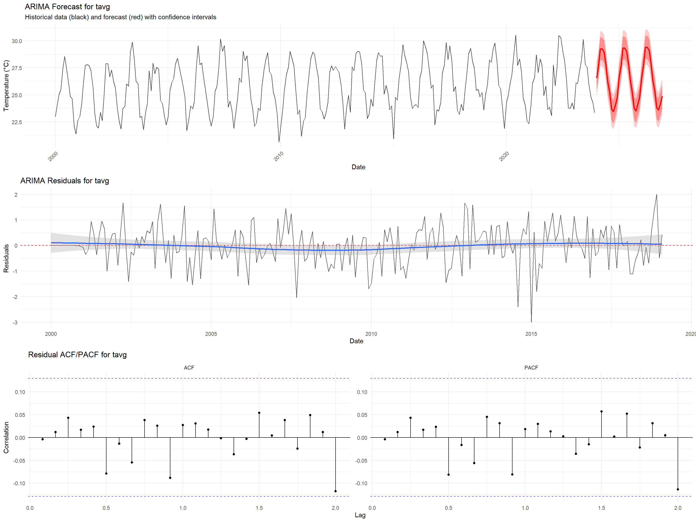
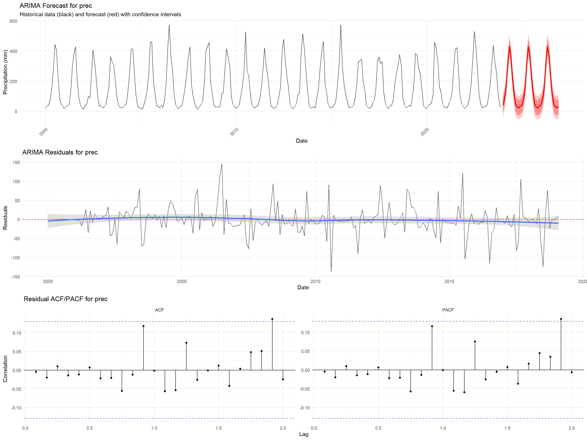
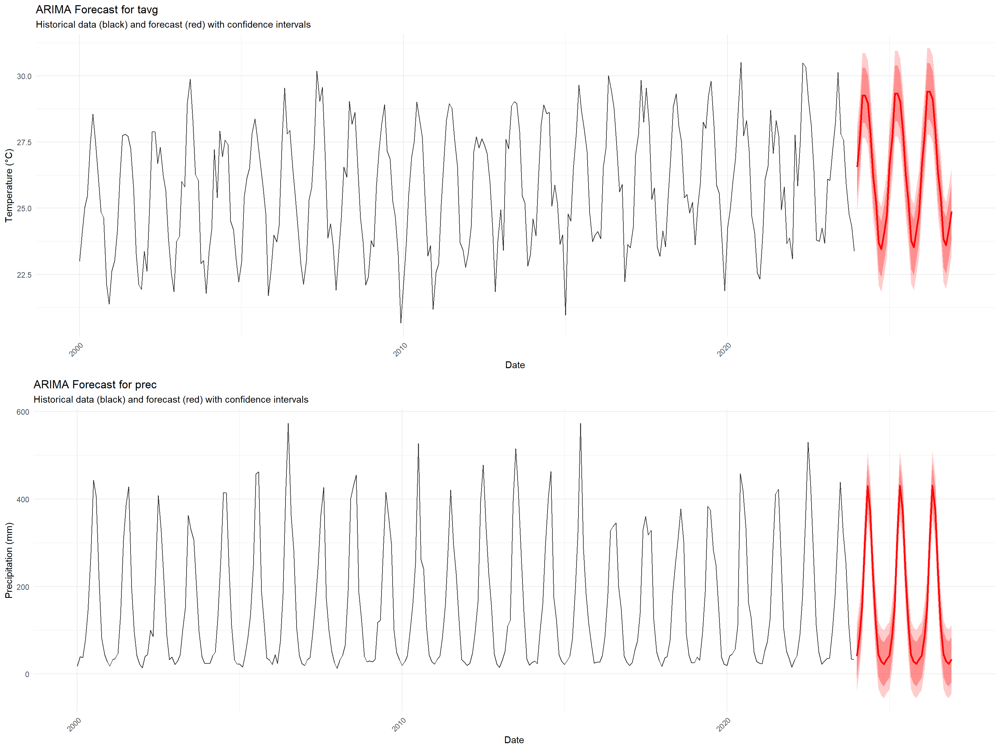

knitr::opts_chunk$set(echo = TRUE, warning = FALSE, message = FALSE)
# Load configuration and data
config <- readRDS("data/enhanced_config.rds")
timeseries_results <- readRDS("data/processed/complete_timeseries_analysis.rds")
india_timeseries <- readRDS("data/processed/india_climate_timeseries.rds")
performance_monitor <- readRDS("data/processed/performance_monitor.rds")
# Load required packages
library(forecast)
library(tseries)
library(ggplot2)
library(dplyr)
library(cowplot)
library(viridis)
library(hydroGOF)6 Enhanced ARIMA Modeling with Model Selection
7 Enhanced ARIMA Modeling and Forecasting
This document implements advanced ARIMA modeling with automated model selection, seasonal decomposition, and comprehensive forecast validation for India’s climate data.
7.1 Setup
7.2 Enhanced Data Preparation for ARIMA
# Prepare time series data for ARIMA modeling
prepare_arima_data <- function(timeseries_df, variables = c("tavg", "prec")) {
arima_data <- list()
for(var_name in variables) {
if(!var_name %in% names(timeseries_df)) {
cat(paste("Variable", var_name, "not found\n"))
next
}
cat(paste("Preparing ARIMA data for", var_name, "...\n"))
# Extract clean time series
ts_values <- timeseries_df[[var_name]]
ts_values <- ts_values[!is.na(ts_values)]
if(length(ts_values) < 50) {
cat(paste("Insufficient data for", var_name, "\n"))
next
}
# Create time series object
ts_object <- ts(ts_values, start = c(2000, 1), frequency = 12)
# Train/test split (80/20)
n_total <- length(ts_object)
n_train <- floor(0.8 * n_total)
train_ts <- window(ts_object, end = time(ts_object)[n_train])
test_ts <- window(ts_object, start = time(ts_object)[n_train + 1])
# Stationarity tests
adf_test <- tryCatch({
adf.test(train_ts)
}, error = function(e) {
list(statistic = NA, p.value = NA)
})
kpss_test <- tryCatch({
kpss.test(train_ts, null = "Trend")
}, error = function(e) {
list(statistic = NA, p.value = NA)
})
# Differencing if needed
n_diff <- ndiffs(train_ts, test = "adf")
n_seasonal_diff <- nsdiffs(train_ts, test = "seas")
arima_data[[var_name]] <- list(
original = ts_object,
train = train_ts,
test = test_ts,
n_train = n_train,
n_test = length(test_ts),
stationarity = list(
adf_statistic = adf_test$statistic,
adf_pvalue = adf_test$p.value,
kpss_statistic = kpss_test$statistic,
kpss_pvalue = kpss_test$p.value,
is_stationary = adf_test$p.value < 0.05 && kpss_test$p.value > 0.05
),
differencing = list(
regular_diff = n_diff,
seasonal_diff = n_seasonal_diff,
total_diff = n_diff + n_seasonal_diff
)
)
cat(paste("Data prepared for", var_name, "- Train:", n_train, "Test:", length(test_ts), "\n"))
}
return(arima_data)
}
# Prepare ARIMA data
arima_prepared_data <- prepare_arima_data(india_timeseries, c("tavg", "prec"))Preparing ARIMA data for tavg ...Data prepared for tavg - Train: 230 Test: 58
Preparing ARIMA data for prec ...Data prepared for prec - Train: 230 Test: 58 # Display preparation summary
cat("\n=== ARIMA DATA PREPARATION SUMMARY ===\n")
=== ARIMA DATA PREPARATION SUMMARY ===for(var in names(arima_prepared_data)) {
data_info <- arima_prepared_data[[var]]
cat(paste("Variable:", var, "\n"))
cat(paste("Training observations:", data_info$n_train, "\n"))
cat(paste("Testing observations:", data_info$n_test, "\n"))
cat(paste("Stationary:", data_info$stationarity$is_stationary, "\n"))
cat(paste("Regular differencing needed:", data_info$differencing$regular_diff, "\n"))
cat(paste("Seasonal differencing needed:", data_info$differencing$seasonal_diff, "\n"))
cat("\n")
}Variable: tavg
Training observations: 230
Testing observations: 58
Stationary: TRUE
Regular differencing needed: 0
Seasonal differencing needed: 1
Variable: prec
Training observations: 230
Testing observations: 58
Stationary: TRUE
Regular differencing needed: 0
Seasonal differencing needed: 1 performance_monitor$log_performance("arima_data_prep")Step: arima_data_prep - Memory: 0.29 MB - Elapsed: 1.38 min7.3 Advanced Model Selection and Fitting
# Comprehensive ARIMA model selection
select_best_arima <- function(prepared_data) {
arima_models <- list()
for(var_name in names(prepared_data)) {
cat(paste("Selecting best ARIMA model for", var_name, "...\n"))
train_ts <- prepared_data[[var_name]]$train
# Multiple model selection approaches
models_tested <- list()
# Method 1: auto.arima with different settings
tryCatch({
# Standard auto.arima
auto_model1 <- auto.arima(train_ts, seasonal = TRUE, stepwise = FALSE,
approximation = FALSE, parallel = TRUE)
models_tested[["auto_standard"]] <- auto_model1
# Force seasonal ARIMA
auto_model2 <- auto.arima(train_ts, seasonal = TRUE,
D = prepared_data[[var_name]]$differencing$seasonal_diff,
stepwise = FALSE)
models_tested[["auto_seasonal"]] <- auto_model2
# Conservative approach
auto_model3 <- auto.arima(train_ts, max.p = 3, max.q = 3, max.P = 2, max.Q = 2,
seasonal = TRUE, stepwise = TRUE)
models_tested[["auto_conservative"]] <- auto_model3
}, error = function(e) {
cat(paste("auto.arima failed for", var_name, ":", e$message, "\n"))
})
# Method 2: Manual grid search (limited)
tryCatch({
if(var_name == "tavg") {
# Temperature-specific models
manual_orders <- list(
c(1, 1, 1), c(2, 1, 0), c(1, 1, 2), c(2, 1, 1)
)
seasonal_orders <- list(
c(1, 1, 1), c(0, 1, 1), c(1, 0, 1)
)
} else {
# Precipitation-specific models
manual_orders <- list(
c(1, 0, 1), c(2, 0, 1), c(1, 1, 1)
)
seasonal_orders <- list(
c(1, 1, 1), c(0, 1, 1)
)
}
best_aic <- Inf
best_manual <- NULL
for(i in 1:min(3, length(manual_orders))) {
for(j in 1:min(2, length(seasonal_orders))) {
tryCatch({
order <- manual_orders[[i]]
seasonal <- seasonal_orders[[j]]
manual_model <- Arima(train_ts,
order = order,
seasonal = list(order = seasonal, period = 12))
if(manual_model$aic < best_aic) {
best_aic <- manual_model$aic
best_manual <- manual_model
}
}, error = function(e) {
# Skip this combination
})
}
}
if(!is.null(best_manual)) {
models_tested[["manual_best"]] <- best_manual
}
}, error = function(e) {
cat(paste("Manual grid search failed for", var_name, "\n"))
})
# Select best model based on AIC
if(length(models_tested) > 0) {
model_aic <- sapply(models_tested, function(x) x$aic)
best_model_name <- names(model_aic)[which.min(model_aic)]
best_model <- models_tested[[best_model_name]]
cat(paste("Best model for", var_name, ":", best_model_name, "with AIC =",
round(best_model$aic, 2), "\n"))
# Model diagnostics
residuals <- residuals(best_model)
ljung_box <- Box.test(residuals, lag = min(20, length(residuals)/4), type = "Ljung-Box")
model_diagnostics <- list(
ljung_box_statistic = ljung_box$statistic,
ljung_box_pvalue = ljung_box$p.value,
residuals_autocorrelated = ljung_box$p.value < 0.05,
mean_residual = mean(residuals, na.rm = TRUE),
sd_residual = sd(residuals, na.rm = TRUE)
)
arima_models[[var_name]] <- list(
best_model = best_model,
best_model_name = best_model_name,
all_models_tested = models_tested,
model_diagnostics = model_diagnostics,
model_summary = list(
order = arimaorder(best_model)[1:3],
seasonal_order = arimaorder(best_model)[4:6],
aic = best_model$aic,
bic = BIC(best_model),
sigma2 = best_model$sigma2
)
)
} else {
cat(paste("No successful models for", var_name, "\n"))
arima_models[[var_name]] <- NULL
}
}
return(arima_models)
}
# Select and fit ARIMA models
arima_models <- select_best_arima(arima_prepared_data)Selecting best ARIMA model for tavg ...
auto.arima failed for tavg : 'mc.cores' > 1 is not supported on Windows
Best model for tavg : manual_best with AIC = 559.59
Selecting best ARIMA model for prec ...
auto.arima failed for prec : 'mc.cores' > 1 is not supported on Windows
Best model for prec : manual_best with AIC = 2241.98 # Display model selection results
cat("\n=== BEST ARIMA MODELS SELECTED ===\n")
=== BEST ARIMA MODELS SELECTED ===for(var in names(arima_models)) {
if(is.null(arima_models[[var]])) {
cat(paste("Variable:", var, "- No model selected\n"))
next
}
model_info <- arima_models[[var]]$model_summary
diag_info <- arima_models[[var]]$model_diagnostics
cat(paste("Variable:", var, "\n"))
cat(paste("Model:", paste0("ARIMA(", paste(model_info$order, collapse = ","), ")"),
"×", paste0("(", paste(model_info$seasonal_order, collapse = ","), ")12"), "\n"))
cat(paste("AIC:", round(model_info$aic, 2), "| BIC:", round(model_info$bic, 2), "\n"))
cat(paste("Residuals autocorrelation:",
ifelse(diag_info$residuals_autocorrelated, "Present", "Absent"), "\n"))
cat(paste("Ljung-Box p-value:", format.pval(diag_info$ljung_box_pvalue), "\n"))
cat("\n")
}Variable: tavg
Model: ARIMA(1,1,1) × (0,1,1)12
AIC: 559.59 | BIC: 573.11
Residuals autocorrelation: Absent
Ljung-Box p-value: 0.99568
Variable: prec
Model: ARIMA(1,1,1) × (0,1,1)12
AIC: 2241.98 | BIC: 2255.5
Residuals autocorrelation: Absent
Ljung-Box p-value: 0.9913 performance_monitor$log_performance("arima_model_selection")Step: arima_model_selection - Memory: 0.82 MB - Elapsed: 1.4 min7.4 Model Validation and Forecasting
# Comprehensive model validation and forecasting
validate_and_forecast <- function(arima_models, prepared_data, forecast_horizon = 36) {
validation_results <- list()
for(var_name in names(arima_models)) {
if(is.null(arima_models[[var_name]])) next
cat(paste("Validating and forecasting for", var_name, "...\n"))
best_model <- arima_models[[var_name]]$best_model
train_ts <- prepared_data[[var_name]]$train
test_ts <- prepared_data[[var_name]]$test
# In-sample validation
fitted_values <- fitted(best_model)
train_actual <- as.numeric(train_ts)
train_metrics <- list(
rmse = sqrt(mean((train_actual - fitted_values)^2, na.rm = TRUE)),
mae = mean(abs(train_actual - fitted_values), na.rm = TRUE),
mape = mean(abs((train_actual - fitted_values) / train_actual), na.rm = TRUE) * 100
)
# Out-of-sample validation
if(length(test_ts) > 0) {
forecast_test <- forecast(best_model, h = length(test_ts))
test_actual <- as.numeric(test_ts)
test_pred <- as.numeric(forecast_test$mean)
test_metrics <- list(
rmse = sqrt(mean((test_actual - test_pred)^2, na.rm = TRUE)),
mae = mean(abs(test_actual - test_pred), na.rm = TRUE),
mape = mean(abs((test_actual - test_pred) / test_actual), na.rm = TRUE) * 100,
nse = NSE(test_pred, test_actual),
r_squared = cor(test_actual, test_pred)^2
)
} else {
test_metrics <- list(rmse = NA, mae = NA, mape = NA, nse = NA, r_squared = NA)
}
# Future forecasting
future_forecast <- forecast(best_model, h = forecast_horizon)
# Create forecast data frame
forecast_dates <- seq(
from = as.Date("2024-01-01"),
by = "month",
length.out = forecast_horizon
)
forecast_df <- data.frame(
Date = forecast_dates,
Variable = var_name,
Forecast = as.numeric(future_forecast$mean),
Lower_80 = as.numeric(future_forecast$lower[, "80%"]),
Upper_80 = as.numeric(future_forecast$upper[, "80%"]),
Lower_95 = as.numeric(future_forecast$lower[, "95%"]),
Upper_95 = as.numeric(future_forecast$upper[, "95%"])
)
# Cross-validation (time series)
cv_results <- tryCatch({
cv_errors <- tsCV(prepared_data[[var_name]]$original,
function(x, h) forecast(Arima(x, model = best_model), h = h)$mean,
h = 1)
list(
cv_rmse = sqrt(mean(cv_errors^2, na.rm = TRUE)),
cv_mae = mean(abs(cv_errors), na.rm = TRUE)
)
}, error = function(e) {
list(cv_rmse = NA, cv_mae = NA)
})
validation_results[[var_name]] <- list(
train_metrics = train_metrics,
test_metrics = test_metrics,
cv_metrics = cv_results,
future_forecast = forecast_df,
forecast_object = future_forecast,
validation_summary = data.frame(
Variable = var_name,
Train_RMSE = train_metrics$rmse,
Test_RMSE = test_metrics$rmse,
Test_R2 = test_metrics$r_squared,
CV_RMSE = cv_results$cv_rmse,
stringsAsFactors = FALSE
)
)
cat(paste("Validation completed for", var_name, "\n"))
}
return(validation_results)
}
# Perform validation and forecasting
validation_results <- validate_and_forecast(arima_models, arima_prepared_data,
forecast_horizon = 36)Validating and forecasting for tavg ...
Validation completed for tavg
Validating and forecasting for prec ...
Validation completed for prec # Display validation summary
cat("\n=== ARIMA MODEL VALIDATION SUMMARY ===\n")
=== ARIMA MODEL VALIDATION SUMMARY ===validation_summary <- do.call(rbind, lapply(validation_results, function(x) x$validation_summary))
if(nrow(validation_summary) > 0) {
# Round only numeric columns
validation_summary_rounded <- validation_summary
numeric_cols <- sapply(validation_summary, is.numeric)
validation_summary_rounded[numeric_cols] <- round(validation_summary[numeric_cols], 4)
print(validation_summary_rounded)
} else {
cat("No validation results available\n")
} Variable Train_RMSE Test_RMSE Test_R2 CV_RMSE
tavg tavg 0.7820 0.9404 0.8373 NA
prec prec 36.8546 36.3046 0.9408 NAperformance_monitor$log_performance("arima_validation")Step: arima_validation - Memory: 1.22 MB - Elapsed: 1.4 min7.5 Enhanced Visualization Dashboard
# Create comprehensive ARIMA visualization dashboard
create_arima_dashboard <- function(validation_results, prepared_data, timeseries_df) {
plots <- list()
for(var_name in names(validation_results)) {
if(is.null(validation_results[[var_name]])) next
# Plot 1: Forecast visualization
forecast_data <- validation_results[[var_name]]$future_forecast
historical_data <- data.frame(
Date = timeseries_df$Date,
Value = timeseries_df[[var_name]]
) %>% filter(!is.na(Value))
forecast_plot <- ggplot() +
# Historical data
geom_line(data = historical_data, aes(x = Date, y = Value),
color = "black", alpha = 0.8) +
# Forecast
geom_line(data = forecast_data, aes(x = Date, y = Forecast),
color = "red", size = 1) +
# Confidence intervals
geom_ribbon(data = forecast_data,
aes(x = Date, ymin = Lower_95, ymax = Upper_95),
fill = "red", alpha = 0.2) +
geom_ribbon(data = forecast_data,
aes(x = Date, ymin = Lower_80, ymax = Upper_80),
fill = "red", alpha = 0.3) +
labs(title = paste("ARIMA Forecast for", var_name),
subtitle = "Historical data (black) and forecast (red) with confidence intervals",
x = "Date", y = if(var_name == "tavg") "Temperature (°C)" else "Precipitation (mm)") +
theme_minimal() +
theme(axis.text.x = element_text(angle = 45, hjust = 1))
plots[[paste0(var_name, "_forecast")]] <- forecast_plot
# Plot 2: Residual analysis
if(!is.null(prepared_data[[var_name]])) {
# Get model residuals
model_residuals <- residuals(arima_models[[var_name]]$best_model)
residual_dates <- time(prepared_data[[var_name]]$train)
residual_data <- data.frame(
Date = as.Date(lubridate::date_decimal(as.numeric(residual_dates))),
Residuals = as.numeric(model_residuals)
)
residual_plot <- ggplot(residual_data, aes(x = Date, y = Residuals)) +
geom_line(alpha = 0.7) +
geom_hline(yintercept = 0, color = "red", linetype = "dashed") +
geom_smooth(se = TRUE, alpha = 0.3) +
labs(title = paste("ARIMA Residuals for", var_name),
x = "Date", y = "Residuals") +
theme_minimal()
plots[[paste0(var_name, "_residuals")]] <- residual_plot
# Plot 3: ACF/PACF of residuals
if(length(model_residuals) > 20) {
acf_data <- acf(model_residuals, plot = FALSE, lag.max = 24)
pacf_data <- pacf(model_residuals, plot = FALSE, lag.max = 24)
acf_df <- data.frame(
Lag = acf_data$lag[-1], # Remove lag 0
ACF = acf_data$acf[-1],
Type = "ACF"
)
pacf_df <- data.frame(
Lag = pacf_data$lag,
ACF = pacf_data$acf,
Type = "PACF"
)
combined_df <- rbind(acf_df, pacf_df)
# Critical values (approximate)
n <- length(model_residuals)
critical_value <- qnorm(0.975) / sqrt(n)
acf_plot <- ggplot(combined_df, aes(x = Lag, y = ACF)) +
geom_hline(yintercept = 0, color = "black") +
geom_hline(yintercept = c(-critical_value, critical_value),
color = "blue", linetype = "dashed", alpha = 0.7) +
geom_segment(aes(xend = Lag, yend = 0)) +
geom_point(size = 1.5) +
facet_wrap(~Type, scales = "free_y") +
labs(title = paste("Residual ACF/PACF for", var_name),
x = "Lag", y = "Correlation") +
theme_minimal()
plots[[paste0(var_name, "_acf")]] <- acf_plot
}
}
}
return(plots)
}
# Generate ARIMA dashboard
arima_plots <- create_arima_dashboard(validation_results, arima_prepared_data, india_timeseries)
# Display plots in organized layout
if(length(arima_plots) > 0) {
# Organize plots by variable
temp_plots <- arima_plots[grepl("tavg", names(arima_plots))]
precip_plots <- arima_plots[grepl("prec", names(arima_plots))]
if(length(temp_plots) >= 2) {
temp_page <- cowplot::plot_grid(plotlist = temp_plots, ncol = 1)
print(temp_page)
ggsave(file.path(config$output_dir, "plots", "arima_temperature_analysis.png"),
temp_page, width = 16, height = 12, dpi = 300, bg = "white")
}
if(length(precip_plots) >= 2) {
precip_page <- cowplot::plot_grid(plotlist = precip_plots, ncol = 1)
print(precip_page)
ggsave(file.path(config$output_dir, "plots", "arima_precipitation_analysis.png"),
precip_page, width = 16, height = 12, dpi = 300, bg = "white")
}
# Combined forecast plot
if(length(validation_results) >= 2) {
forecast_plots <- arima_plots[grepl("forecast", names(arima_plots))]
if(length(forecast_plots) >= 2) {
combined_forecast <- cowplot::plot_grid(plotlist = forecast_plots, ncol = 1)
print(combined_forecast)
ggsave(file.path(config$output_dir, "plots", "arima_combined_forecasts.png"),
combined_forecast, width = 16, height = 10, dpi = 300, bg = "white")
}
}
}


performance_monitor$log_performance("arima_visualization")Step: arima_visualization - Memory: 236.21 MB - Elapsed: 1.46 min7.6 Save Enhanced ARIMA Results
# Compile comprehensive ARIMA results
enhanced_arima_results <- list(
# Prepared data
prepared_data = arima_prepared_data,
# Models
fitted_models = arima_models,
# Validation and forecasting
validation_results = validation_results,
# Summary tables
model_summary = do.call(rbind, lapply(names(arima_models), function(var) {
if(is.null(arima_models[[var]])) return(NULL)
model_info <- arima_models[[var]]$model_summary
diag_info <- arima_models[[var]]$model_diagnostics
data.frame(
Variable = var,
Model_Order = paste(model_info$order, collapse = ","),
Seasonal_Order = paste(model_info$seasonal_order, collapse = ","),
AIC = round(model_info$aic, 2),
BIC = round(model_info$bic, 2),
Sigma2 = round(model_info$sigma2, 6),
Ljung_Box_P = diag_info$ljung_box_pvalue,
Residuals_OK = !diag_info$residuals_autocorrelated,
stringsAsFactors = FALSE
)
})),
# Forecasts
all_forecasts = do.call(rbind, lapply(validation_results, function(x) x$future_forecast)),
# Metadata
arima_metadata = list(
timestamp = Sys.time(),
variables_modeled = names(arima_models),
forecast_horizon = 36,
model_selection_method = "AIC-based with multiple approaches",
validation_method = "Train/test split + Cross-validation",
total_models_tested = sum(sapply(arima_models, function(x) {
if(is.null(x)) return(0) else return(length(x$all_models_tested))
}))
)
)
# Save individual components
saveRDS(arima_models, "data/processed/arima_fitted_models.rds")
saveRDS(validation_results, "data/processed/arima_validation_results.rds")
saveRDS(enhanced_arima_results, "data/processed/complete_arima_analysis.rds")
# Export key results
if(!is.null(enhanced_arima_results$model_summary) && nrow(enhanced_arima_results$model_summary) > 0) {
write.csv(enhanced_arima_results$model_summary,
"data/processed/arima_model_summary.csv", row.names = FALSE)
}
if(!is.null(enhanced_arima_results$all_forecasts) && nrow(enhanced_arima_results$all_forecasts) > 0) {
write.csv(enhanced_arima_results$all_forecasts,
"data/processed/arima_forecasts_2024_2026.csv", row.names = FALSE)
}
if(nrow(validation_summary) > 0) {
write.csv(validation_summary,
"data/processed/arima_validation_summary.csv", row.names = FALSE)
}
performance_monitor$log_performance("arima_saving")Step: arima_saving - Memory: 236.51 MB - Elapsed: 1.48 mincat("Enhanced ARIMA analysis results saved\n")Enhanced ARIMA analysis results saved7.7 Summary
cat("\n=== ENHANCED ARIMA MODELING COMPLETE ===\n")
=== ENHANCED ARIMA MODELING COMPLETE ===if(!is.null(enhanced_arima_results$model_summary) && nrow(enhanced_arima_results$model_summary) > 0) {
cat("Variables successfully modeled:", nrow(enhanced_arima_results$model_summary), "\n")
# Display best models
for(i in 1:nrow(enhanced_arima_results$model_summary)) {
row <- enhanced_arima_results$model_summary[i, ]
cat(paste("•", row$Variable, ": ARIMA(", row$Model_Order, ")×(",
row$Seasonal_Order, ")12, AIC =", row$AIC, "\n"))
}
cat("\nModel Validation Results:\n")
print(validation_summary)
} else {
cat("No models successfully fitted\n")
}Variables successfully modeled: 2
• tavg : ARIMA( 1,1,1 )×( 0,1,1 )12, AIC = 559.59
• prec : ARIMA( 1,1,1 )×( 0,1,1 )12, AIC = 2241.98
Model Validation Results:
Variable Train_RMSE Test_RMSE Test_R2 CV_RMSE
tavg tavg 0.7820166 0.9403614 0.8372607 NA
prec prec 36.8546316 36.3046124 0.9408049 NA# Forecast summary
if(!is.null(enhanced_arima_results$all_forecasts) && nrow(enhanced_arima_results$all_forecasts) > 0) {
forecast_summary <- enhanced_arima_results$all_forecasts %>%
group_by(Variable) %>%
summarise(
Forecast_Mean = round(mean(Forecast, na.rm = TRUE), 3),
Forecast_Range = paste(round(min(Forecast, na.rm = TRUE), 2), "-",
round(max(Forecast, na.rm = TRUE), 2)),
.groups = 'drop'
)
cat("\nForecast Summary (2024-2026):\n")
print(forecast_summary)
}
Forecast Summary (2024-2026):
# A tibble: 2 × 3
Variable Forecast_Mean Forecast_Range
<chr> <dbl> <chr>
1 prec 156. 22.63 - 430.68
2 tavg 26.5 23.46 - 29.41 cat("\nFiles Created:\n")
Files Created:cat("- data/processed/arima_fitted_models.rds\n")- data/processed/arima_fitted_models.rdscat("- data/processed/arima_validation_results.rds\n")- data/processed/arima_validation_results.rdscat("- data/processed/complete_arima_analysis.rds\n")- data/processed/complete_arima_analysis.rdsif(file.exists("data/processed/arima_model_summary.csv")) {
cat("- data/processed/arima_model_summary.csv\n")
}- data/processed/arima_model_summary.csvif(file.exists("data/processed/arima_forecasts_2024_2026.csv")) {
cat("- data/processed/arima_forecasts_2024_2026.csv\n")
}- data/processed/arima_forecasts_2024_2026.csvif(file.exists("data/processed/arima_validation_summary.csv")) {
cat("- data/processed/arima_validation_summary.csv\n")
}- data/processed/arima_validation_summary.csv# List visualization files
viz_files <- list.files(file.path(config$output_dir, "plots"),
pattern = "arima", full.names = FALSE)
if(length(viz_files) > 0) {
cat("Visualization files:\n")
for(file in viz_files) {
cat(paste("- outputs/plots/", file, "\n", sep = ""))
}
}Visualization files:
- outputs/plots/arima_combined_forecasts.png
- outputs/plots/arima_precipitation_analysis.png
- outputs/plots/arima_temperature_analysis.pngcat("\nNext Step: Run 06-enhanced-ml-modeling.qmd\n")
Next Step: Run 06-enhanced-ml-modeling.qmd